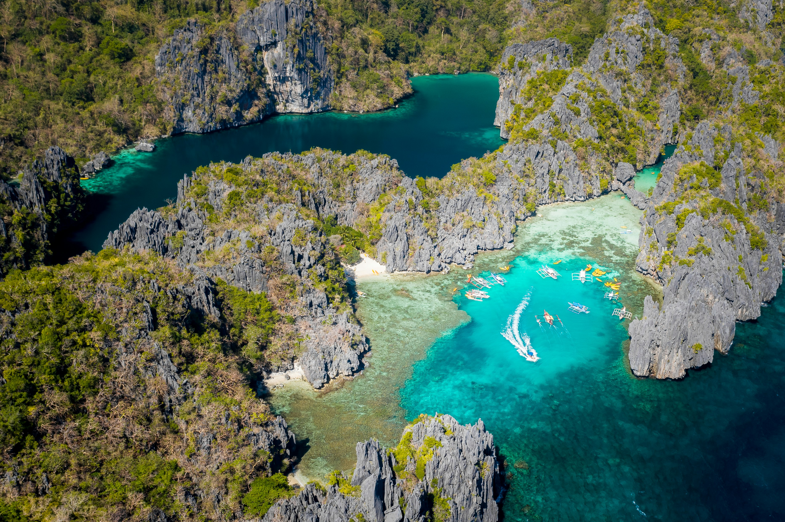
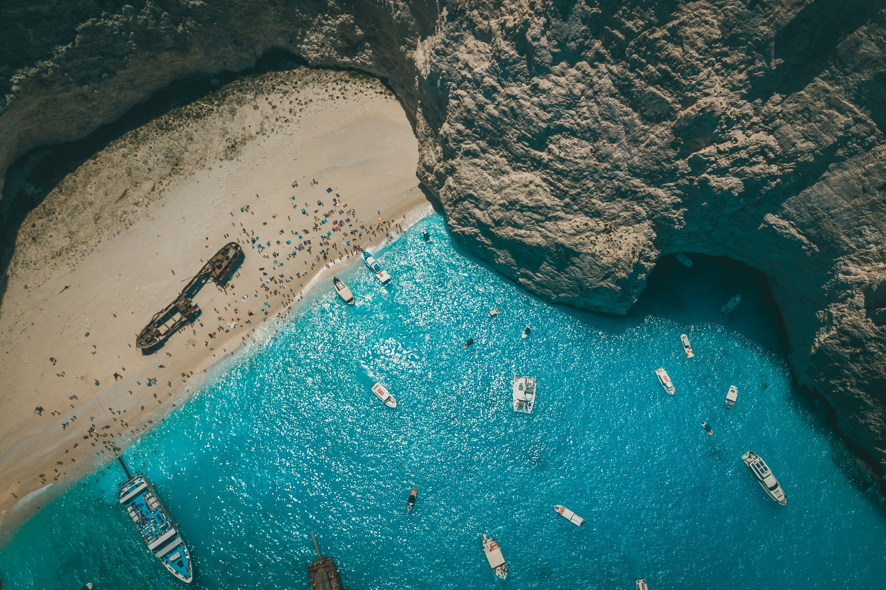
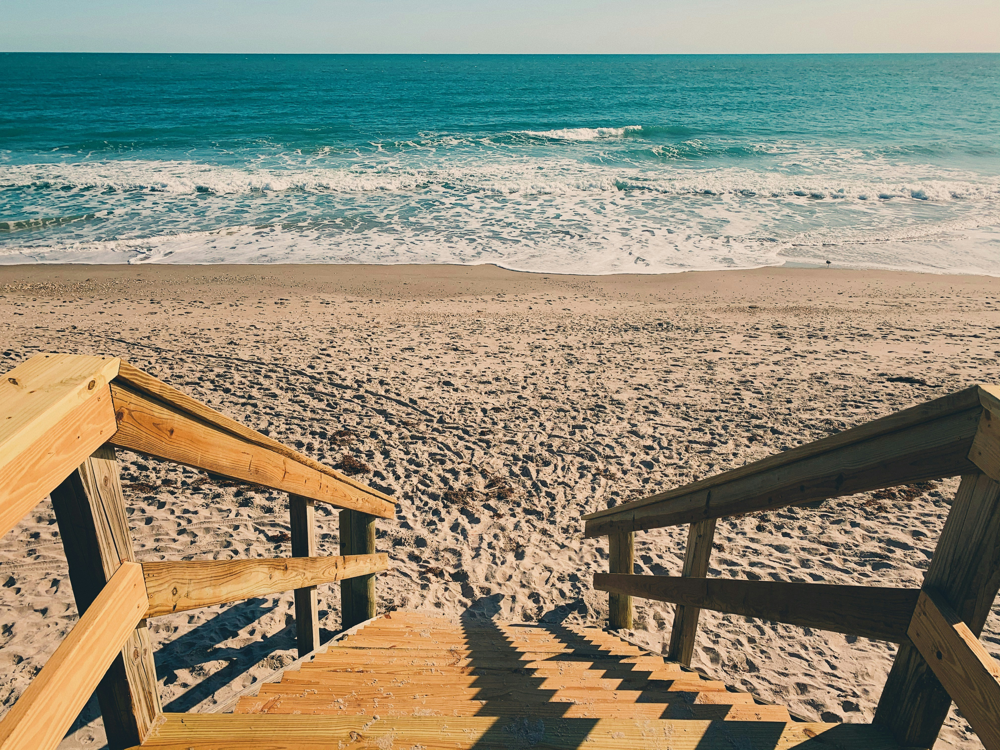
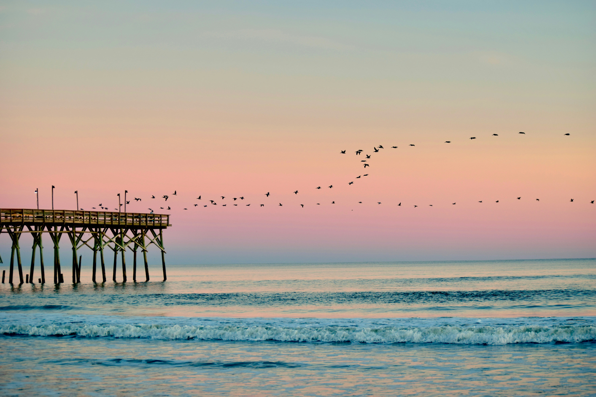
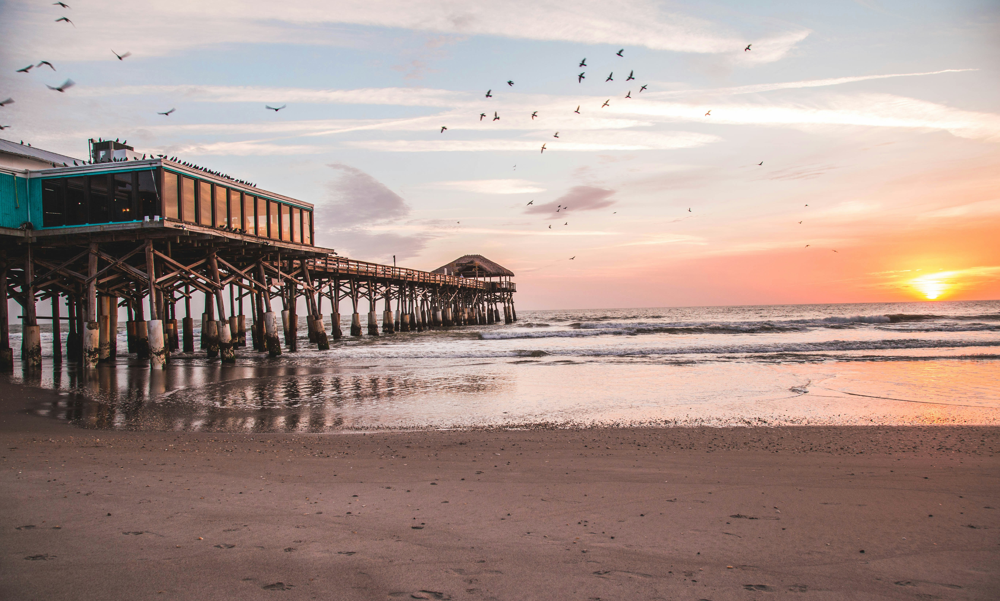
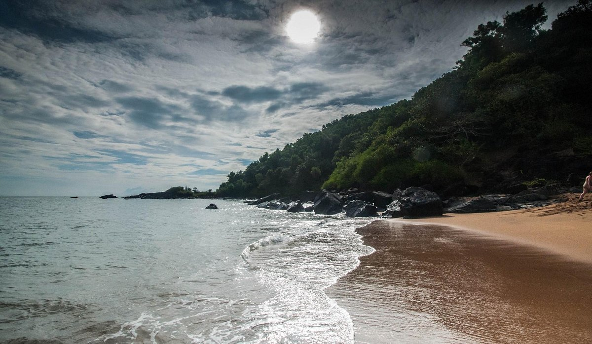
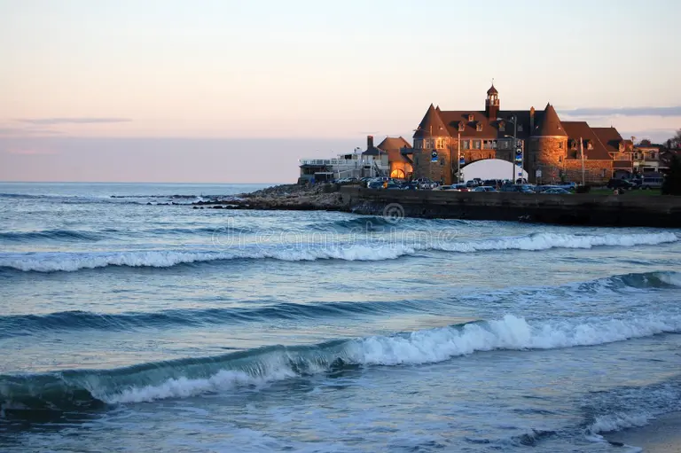
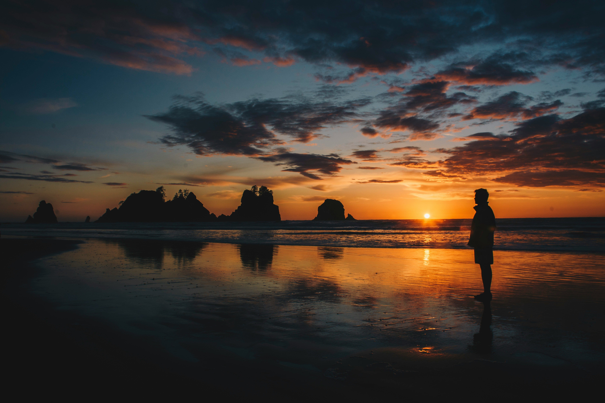
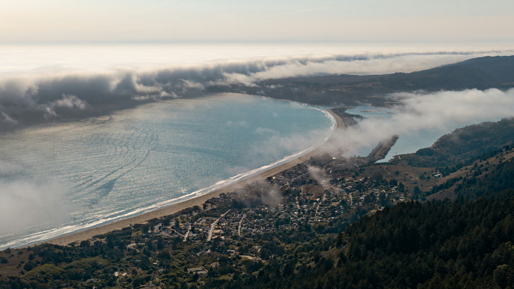

I can attest to the allure of the world's most captivating beaches. From the pristine shores of the Maldives to the vibrant atmosphere of Copacabana Beach in Rio de Janeiro, these destinations offer unparalleled beauty and a sense of escape. Whether you're seeking adventure, relaxation, or cultural immersion, there's something for every traveler to enjoy. From surfing in Hawaii to indulging in fresh seafood feasts in Greece, the experiences and activities are diverse and enticing. Ultimately, the allure of these beaches lies in their ability to provide a true sense of freedom and connection to nature, making them irresistible destinations for travelers from all over the globe.here are some beautiful beaches shall we start with the beaches in the north first.
beaches from north
Cannon Beach
Nestled along Oregon's captivating coastline, Canon Beach offers a rich tapestry of natural wonders and recreational opportunities. Its expansive shoreline, characterized by fine golden sands, provides a picturesque backdrop for leisurely strolls and beachcombing adventures. Towering sea stacks, notably Haystack Rock standing at 235 feet tall, punctuate the horizon, serving as enduring monuments to the region's geological history.
Beyond its stunning vistas, Canon Beach boasts diverse ecosystems ripe for exploration. Visitors can delve into tide pools teeming with marine life, observing colorful sea anemones and elusive starfish up close. Meanwhile, hiking enthusiasts can traverse scenic trails meandering through lush coastal forests, offering glimpses of indigenous flora and fauna.
For those seeking more active pursuits, Canon Beach is a haven for water sports enthusiasts. Surfing enthusiasts can catch waves along its pristine shores, while kite flying enthusiasts can take advantage of the area's consistent winds. Amidst the tranquility of designated picnicking areas, visitors can unwind and savor panoramic views of the Pacific Ocean.
As the sun sets over the horizon, the sky transforms into a breathtaking canvas, ablaze with hues of pink, orange, and violet, casting a spellbinding aura over the landscape. This celestial spectacle offers the perfect backdrop for stargazing, providing an opportunity to marvel at the celestial wonders above.
In essence, Canon Beach beckons with its diverse array of natural attractions, inviting visitors to immerse themselves in the pristine beauty and tranquility of the Pacific Northwest coastline.
geolocation
El Nido

Nestled within the breathtaking landscapes of Palawan, El Nido beckons with its pristine shores, vibrant marine ecosystems, and awe-inspiring geological formations. The area comprises over 45 islands and islets, each offering its own unique charm and opportunities for exploration.
El Nido's crystal-clear waters teem with diverse marine life, including colorful corals, reef fish, and even sea turtles. This makes it an ideal destination for snorkeling and diving enthusiasts, who can discover the underwater wonders of sites like Shimizu Island and Twin Rocks.
The towering limestone cliffs that characterize El Nido's coastline are a testament to the area's geological history. These karst formations, draped in lush greenery, create a dramatic backdrop for island-hopping adventures and provide opportunities for rock climbing and cave exploration.
Amidst the natural beauty, El Nido also boasts a rich cultural heritage. Visitors can immerse themselves in the local way of life by exploring traditional fishing villages, sampling fresh seafood delicacies, and learning about the indigenous traditions of the Tagbanua people, who have inhabited the area for centuries.
Island-hopping tours are a popular way to experience the diverse landscapes of El Nido, taking visitors to hidden lagoons, secret beaches, and secluded coves. Activities such as kayaking through mangrove forests, hiking to panoramic viewpoints, and exploring waterfalls add to the adventure.
As the sun sets over the horizon, painting the sky in hues of gold and crimson, the magic of El Nido comes alive. Whether seeking relaxation, adventure, or cultural immersion, El Nido offers a wealth of experiences amidst the natural wonders of the Philippine islands.
geolocation
Navagio Beach

Navagio Beach, also known as Shipwreck Beach, graces the shores of Zakynthos with its crescent-shaped golden sands framed by towering limestone cliffs and the iconic shipwreck partially submerged in crystal-clear turquoise waters. This idyllic setting invites visitors to relax on the soft sands, swim in the refreshing waters, and explore nearby caves and rock formations. Adrenaline seekers can indulge in cliff jumping while enjoying stunning views, and nearby Anafonitria village offers a glimpse into traditional Greek life with its tavernas and shops. Boat tours provide opportunities for closer exploration of the shipwreck and nearby Blue Caves, while the mesmerizing sunset paints a golden hue over Navagio Beach, promising unforgettable experiences amidst the beauty of Zakynthos.
beaches in SOUTH
destin beach

Nestled on the Florida Panhandle, Destin Beach beckons with its powdery white sands and shimmering emerald waters, creating an idyllic setting for a memorable beach vacation. As you stroll along the shoreline, the tranquil beauty of the Gulf of Mexico unfolds before you, offering a serene escape from the bustle of everyday life. Whether you're seeking thrilling water sports, championship golf courses, or world-class fishing excursions, Destin's diverse offerings promise an exhilarating adventure for all. After a sun-drenched day by the sea, indulge in the local culinary delights at waterfront restaurants, savoring freshly caught seafood and sipping refreshing cocktails as the sun dips below the horizon. With an array of accommodations ranging from upscale resorts to charming beachfront villas, Destin Beach invites you to immerse yourself in its coastal allure and create timeless memories.
geolocation
kure beach

Nestled along the North Carolina coast, Kure Beach offers a serene escape with its pristine sandy shores and family-friendly atmosphere. Beyond its inviting waters perfect for swimming and sunbathing, Kure Beach boasts a rich maritime history showcased at attractions like the Fort Fisher State Historic Site and the North Carolina Aquarium. Visitors can explore Civil War-era forts, learn about local marine ecosystems, and encounter native sea creatures up close.
Outdoor enthusiasts will find a plethora of activities to enjoy, from fishing and kayaking to paddleboarding and surfing. Nearby Carolina Beach State Park offers hiking trails, picnic areas, and opportunities for birdwatching and wildlife viewing, allowing visitors to immerse themselves in the coastal ecosystem. Throughout the year, Kure Beach hosts a variety of events and festivals, from seafood festivals to music concerts, providing entertainment and cultural experiences for all ages. As the sun sets over the horizon, casting a warm glow over the beach, Kure Beach remains a tranquil oasis where unforgettable memories are made amidst the beauty of the North Carolina coast.
geolocation
cocoa beach

Cocoa Beach, nestled along Florida's Space Coast, offers a dynamic blend of sun, surf, and space exploration. Renowned for its wide, sandy beaches and consistent waves, Cocoa Beach is a paradise for surfers, beachcombers, and families alike. Beyond its coastal allure, the city boasts a rich history intertwined with the space program, with attractions such as the Kennedy Space Center Visitor Complex providing immersive experiences into space exploration. Visitors can also enjoy outdoor activities like fishing, kayaking, and beach volleyball, or explore the vibrant dining and entertainment scene along the historic Cocoa Beach Pier. With its proximity to Orlando attractions and its unique blend of beachside charm and space-age excitement, Cocoa Beach promises unforgettable experiences for travelers of all ages.
geolocation
beaches in EAST
half moon beach

At the north coast of Jamaica, Half Moon Beach offers a serene retreat away from the hustle and bustle of city life. The beach's name is derived from its unique crescent shape, which provides a sense of seclusion and intimacy for visitors seeking tranquility. In addition to its pristine sands and inviting waters, Half Moon Beach is surrounded by lush vegetation, including coconut palms and sea grape trees, creating a picturesque backdrop for relaxation and exploration.
For those interested in local culture, nearby communities offer opportunities to immerse oneself in Jamaican traditions and hospitality. Visitors can sample authentic Jamaican dishes like jerk chicken and ackee and saltfish, or engage with local artisans selling handmade jewelry, crafts, and souvenirs.
Water sports enthusiasts will find ample opportunities for adventure at Half Moon Beach. Snorkeling and scuba diving excursions allow visitors to discover the vibrant coral reefs and diverse marine life just offshore, while boat tours offer the chance to explore nearby attractions such as the Luminous Lagoon, known for its bioluminescent waters.
As the sun sets over the horizon, casting a warm glow over Half Moon Beach, the tranquil atmosphere is enhanced by the sounds of reggae music drifting through the air. Whether seeking relaxation, cultural experiences, or outdoor adventures, Half Moon Beach offers a truly immersive escape into the beauty and hospitality of Jamaica's north coast.
geolocation
sand beach, acdia natinal park
Nestled within the rugged landscape of Acadia National Park in Maine, Sand Beach offers a serene escape with its pristine shores and dramatic coastal scenery. This picturesque crescent-shaped beach is framed by imposing granite cliffs and lush evergreen forests, creating a stunning backdrop for relaxation and exploration. Despite its name, the beach is composed of unique grains of shell fragments, giving the sand its signature light beige color and soft texture.
Sand Beach's location within Acadia National Park provides ample opportunities for outdoor recreation and adventure. Visitors can swim in the refreshing waters of the Atlantic Ocean, explore nearby hiking trails that wind through the surrounding forest, or simply soak up the sun while enjoying panoramic views of the coastline and surrounding mountains.
For nature enthusiasts, Sand Beach serves as a gateway to the diverse ecosystems of Acadia National Park. Tide pools teeming with marine life are exposed at low tide, offering a fascinating glimpse into the coastal habitat. Birdwatchers can spot a variety of seabirds, including gulls, terns, and even bald eagles, soaring overhead or hunting along the shoreline.
Sand Beach is also a popular starting point for scenic drives along the Park Loop Road, which offers access to other iconic landmarks within Acadia National Park, such as Thunder Hole and Cadillac Mountain. Whether seeking relaxation, adventure, or natural beauty, Sand Beach in Acadia National Park promises an unforgettable experience amidst the splendor of Maine's rugged coastline.
geolocation
Narragansett

Narragansett, situated along the picturesque coastline of Rhode Island, offers a charming blend of sandy beaches, historic landmarks, and coastal charm. One of the town's highlights is Narragansett Town Beach, a popular destination known for its soft sands and rolling Atlantic waves, perfect for swimming, surfing, and sunbathing. Beyond the beach, Narragansett boasts a rich maritime heritage, with landmarks like the Point Judith Lighthouse and the historic Towers serving as iconic symbols of the town's seafaring past.
Visitors to Narragansett can explore a variety of outdoor activities, including fishing charters, kayaking excursions, and scenic coastal hikes along the Narragansett Bay. For those interested in history and culture, the town offers museums, art galleries, and guided tours showcasing its colonial roots and maritime traditions.
Narragansett's vibrant dining scene features an array of seafood restaurants, clam shacks, and waterfront cafes, where visitors can savor fresh local cuisine while enjoying panoramic views of the bay. The town also hosts events and festivals throughout the year, celebrating everything from music and art to food and wine, adding to its vibrant atmosphere.
As the sun sets over the Atlantic horizon, casting a warm glow over Narragansett's picturesque coastline, visitors are treated to a serene and unforgettable experience amidst the natural beauty and coastal charm of this quintessential New England town.
geolocation
beaches in WEST
Olympic National Park, Washington

Nestled within the majestic landscapes of Washington state, Olympic National Park stands as a testament to the diversity and beauty of the Pacific Northwest. Encompassing nearly one million acres, the park offers a breathtaking array of ecosystems, from rugged coastline and lush temperate rainforests to towering mountains and pristine alpine lakes. Visitors can explore stunning beaches like Ruby Beach and Rialto Beach, where rugged sea stacks rise from the surf, or wander through the ancient trees draped in moss and ferns of the Hoh Rainforest. Adventure seekers can hike, camp, and wildlife watch amidst the park's diverse terrain, where opportunities for outdoor recreation abound. Olympic National Park's unparalleled beauty and variety make it a must-visit destination for nature lovers and outdoor enthusiasts alike.
geolocation
Stinson Beach, California

Stinson Beach, nestled along California's picturesque coastline just north of San Francisco, offers a tranquil escape with its pristine shores and rugged coastal scenery. Golden sands stretch for miles, inviting visitors to swim, surf, or simply bask in the sun. Nearby hiking trails provide opportunities for coastal exploration and scenic vistas, while the charming village atmosphere offers quaint shops, waterfront cafes, and fresh seafood dining. Serving as a gateway to nearby natural wonders like Muir Woods National Monument and Mount Tamalpais State Park, Stinson Beach promises outdoor adventure amidst its laid-back coastal charm.
geolocation
Cape Disappointment, Washington
Located on the Long Beach Peninsula in southwestern Washington State sits Cape Disappointment State Park. Don't be put off by the name - its rugged yet stunning beaches with waves pounding into cliffs that are hundreds of feet high will not disappoint at all. Deemed the 'graveyard of the Pacific, the area is a spectacular place to be humbled by the power of the ocean.
As the waters can be rough and there are no lifeguards, swimming is not advised, but the views are breathtaking, and walking trails are abundant. The beaches here also make for excellent clam-digging, kite-flying, fishing, and picnics. The area is steeped in historical significance and maritime legacy too. Visit the Lewis & Clark Interpretive Center to learn more via their interactive exhibitions.